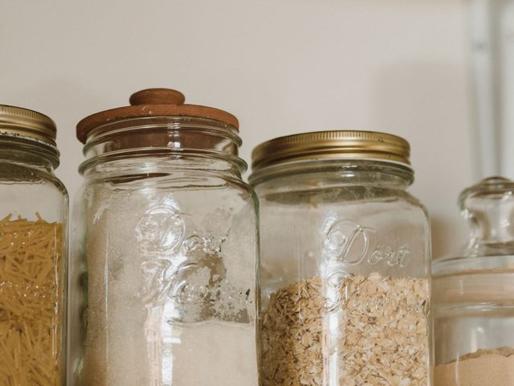
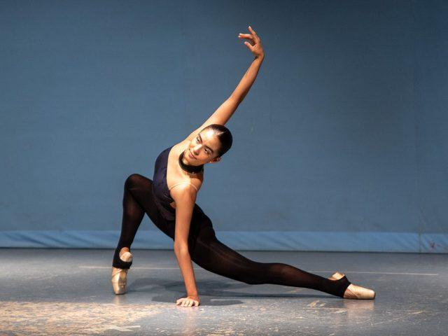
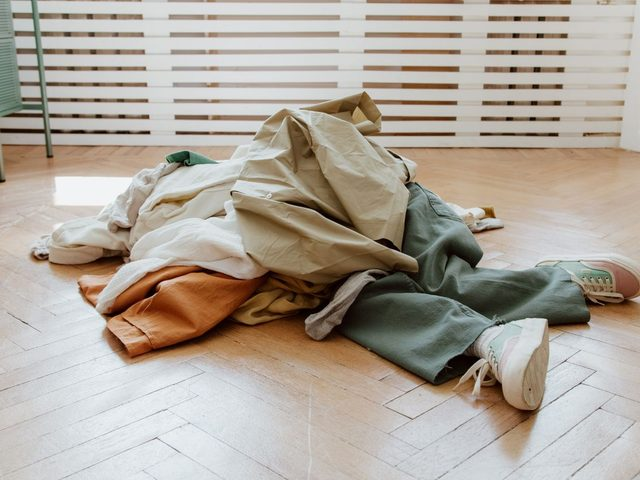
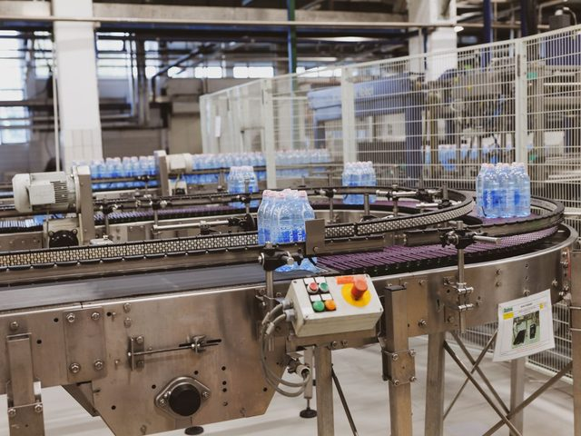
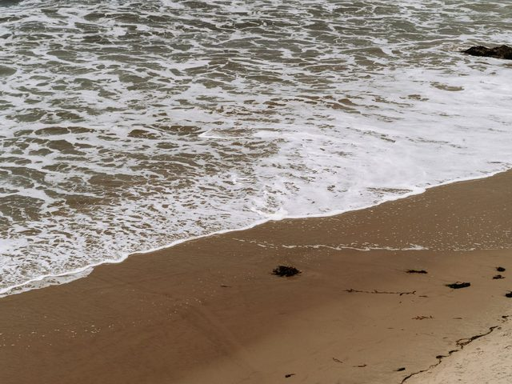

UNIT 34 · VOCABULARY
其他名詞（3）
Other nouns (3)
42 個單字聽・唸・用
本單元單字一覽
其他名詞第三部分，information 到 scenery，共 42 個。注意不可數名詞 information、pollution、progress、safety、sand、scenery，和 leaf → leaves。
informationinvitationJapanesekingdomKoreanlackleaflidlinklockermannermassmeaningmessagemetalmethodmotionmovementnestobjectoperationopinionpatternpeaceperiodpilepoisonpollutionpopulationpowderpressureproductionprogressprojectpurposeresultrolesafetysamplesandscenescenery
每個字都有 🔊，先聽發音、跟著唸，再看例句。
單字 1–4
information
資訊；消息n.
You can find more information on our website.
你可以在我們的網站上找到更多資訊。
你可以在我們的網站上找到更多資訊。

invitation
邀請；邀請函n.
Thank you for the invitation to your party.
謝謝你邀請我參加你的派對。
謝謝你邀請我參加你的派對。
🗾
Japanese
日本人；日語；日本的n. / adj.
She can speak a little Japanese.
她會說一點日語。
她會說一點日語。

kingdom
王國n.
The king ruled a small kingdom by the sea.
國王統治一個海邊的小王國。
國王統治一個海邊的小王國。
單字 5–8
🇰🇷
Korean
韓國人；韓語；韓國的n. / adj.
Many teenagers like Korean dramas.
很多青少年喜歡韓劇。
很多青少年喜歡韓劇。
🥱
lack
缺乏；不足n. / v.
He felt tired because of a lack of sleep.
他因為睡眠不足而覺得累。
他因為睡眠不足而覺得累。

leaf
葉子n.
The leaves turn red and yellow in autumn.
葉子在秋天變紅變黃。
葉子在秋天變紅變黃。

lid
蓋子n.
Put the lid back on the jar.
把蓋子蓋回罐子上。
把蓋子蓋回罐子上。
單字 9–12
link
連結；關聯；連接n. / v.
Click the link to watch the video.
點這個連結看影片。
點這個連結看影片。

locker
置物櫃n.
I keep my books in my locker at school.
我把書放在學校的置物櫃。
我把書放在學校的置物櫃。

manner
方式；（複數）禮貌n.
It's bad manners to talk with your mouth full.
嘴裡塞滿食物說話很沒禮貌。
嘴裡塞滿食物說話很沒禮貌。
👥
mass
大量；團；彌撒n.
There was a mass of people at the station.
車站有一大群人。
車站有一大群人。
單字 13–16
📖
meaning
意思；意義n.
What's the meaning of this word?
這個字是什麼意思？
這個字是什麼意思？

message
訊息；留言n.
Can I leave a message for Ms. Lin?
我可以留言給林老師嗎？
我可以留言給林老師嗎？
🔩
metal
金屬n.
This box is made of metal.
這個盒子是金屬做的。
這個盒子是金屬做的。
🧪
method
方法n.
What's the best method to learn new words?
背新單字最好的方法是什麼？
背新單字最好的方法是什麼？
單字 17–20

motion
動作；移動n.
Let's watch the goal again in slow motion.
我們用慢動作再看一次那一球。
我們用慢動作再看一次那一球。

movement
動作；運動；移動n.
The dancer's movements were beautiful.
舞者的動作很優美。
舞者的動作很優美。

nest
巢；築巢n. / v.
There are three eggs in the nest.
鳥巢裡有三顆蛋。
鳥巢裡有三顆蛋。
🛸
object
物體；目標n.
There is a strange object in the sky.
天空中有一個奇怪的物體。
天空中有一個奇怪的物體。
單字 21–24

operation
手術；操作n.
Grandpa had an operation on his knee.
爺爺膝蓋動了手術。
爺爺膝蓋動了手術。
🗨️
opinion
意見；看法n.
In my opinion, the movie was too long.
依我看，那部電影太長了。
依我看，那部電影太長了。

pattern
圖案；模式n.
I like the flower pattern on your dress.
我喜歡你洋裝上的花朵圖案。
我喜歡你洋裝上的花朵圖案。
☮️
peace
和平；平靜n.
Everyone wants to live in peace.
每個人都想活在和平之中。
每個人都想活在和平之中。
單字 25–28
⏳
period
一段時間；（上課）節；句號n.
We have math in the first period.
我們第一節是數學課。
我們第一節是數學課。

pile
一堆；一疊n.
There is a pile of dirty clothes on the floor.
地上有一堆髒衣服。
地上有一堆髒衣服。

poison
毒；毒藥n.
Keep the poison away from children.
把毒藥放在小孩拿不到的地方。
把毒藥放在小孩拿不到的地方。
pollution
汙染n.
Air pollution is a big problem in big cities.
空氣汙染是大城市的大問題。
空氣汙染是大城市的大問題。
單字 29–32

population
人口n.
Taiwan has a population of about 23 million.
台灣人口大約兩千三百萬。
台灣人口大約兩千三百萬。

powder
粉；粉末n.
Mix the milk powder with warm water.
把奶粉和溫水混合。
把奶粉和溫水混合。
pressure
壓力n.
I feel a lot of pressure before exams.
考試前我覺得壓力很大。
考試前我覺得壓力很大。

production
生產；產量n.
The factory increased its production of cars.
那家工廠增加了汽車產量。
那家工廠增加了汽車產量。
單字 33–36
📈
progress
進步；進展n.
You've made great progress in English!
你的英文進步很多！
你的英文進步很多！

project
計畫；專題n.
We're working on a group project about the ocean.
我們在做一個關於海洋的小組專題。
我們在做一個關於海洋的小組專題。
🎯
purpose
目的；用途n.
He didn't break the cup on purpose.
他不是故意打破杯子的。
他不是故意打破杯子的。
📋
result
結果n.
The test results will come out next week.
考試結果下週出來。
考試結果下週出來。
單字 37–40

role
角色；作用n.
She played the role of Snow White.
她扮演白雪公主的角色。
她扮演白雪公主的角色。
safety
安全n.
Fasten your seat belt for your safety.
為了安全，請繫好安全帶。
為了安全，請繫好安全帶。

sample
樣品；試吃品n.
The shop gave us free samples of cake.
那家店給我們免費試吃的蛋糕。
那家店給我們免費試吃的蛋糕。

sand
沙；沙子n.
The kids are building a castle out of sand.
孩子們在用沙子堆城堡。
孩子們在用沙子堆城堡。
單字 41–42

scene
場景；景色；現場n.
This is my favorite scene in the movie.
這是電影裡我最喜歡的一幕。
這是電影裡我最喜歡的一幕。
scenery
風景；景色n.
The scenery in Taroko is amazing.
太魯閣的風景很壯觀。
太魯閣的風景很壯觀。
不可數名詞
| 字 | 說法 |
|---|---|
| information | a piece of information |
| pollution | air pollution |
| progress | make progress |
| sand | some sand |
| scenery | beautiful scenery |
scene 是「一個場景」可數；scenery 是「一整片風景」不可數。
快問快答：中文 → 英文
1資訊；消息information
2日本人；日語；日本的Japanese
3韓國人；韓語；韓國的Korean
4葉子leaf
5連結；關聯；連接link
6方式；（複數）禮貌manner
7意思；意義meaning
8金屬metal
快問快答：英文 → 中文
1motion動作；移動
2nest巢；築巢
3operation手術；操作
4pattern圖案；模式
5period一段時間；（上課）節；句號
6poison毒；毒藥
7population人口
8pressure壓力
學完了！接下來
複習方法
review
- 回到「📗 單字卡」，按「遮中文」自己考自己
- 再按「遮英文」，看中文說出英文
- 每個例句跟著 🔊 唸一次
準備好了
- 按右上角「📝 前往測驗」
- 測驗錯的題目要訂正到全對
- 訂正完成補送 1 點